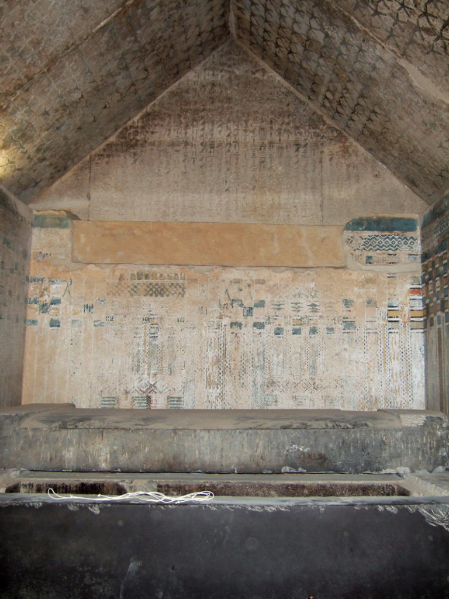

Turistene beveget seg forsiktig ned den bratte trappen. Belysningen var dårlig og de måtte se seg nøye for. Som om ikke det var nok, blinket det også i lysene, og stenene i trappen var glatte av årtusener med slitasje. Temperaturen ble kjøligere jo lenger ned de kom. I enden av trappen kom de til et gravkammer i pyramidens indre. Noen av turistene akket seg over stemningen i gravkammeret, mens andre påpekte at hele pyramiden var et eneste stort monument over de døde. En lav gitterdør med en kodelås sperret veien videre innover i pyramiden.
 // mangler et kryssord med input